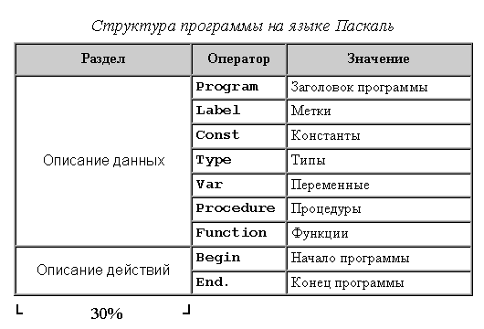
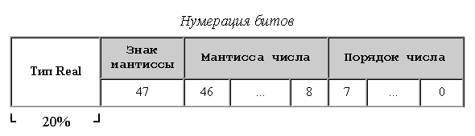
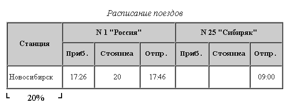
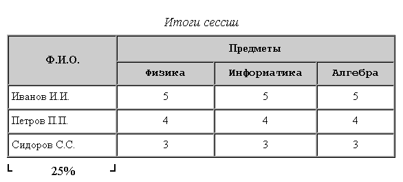

Лабораторные задания по курсу "Интернет-технологии"
Создать документ,
в котором в заголовке окна браузера должна быть надпись
"Лабораторная 2".
С использованием команд создания таблицы сформировать таблицу по указанному
варианту.
Обратить внимание на ширину первого столбца
(задать в процентах от ширины таблицы),
шрифт (курсив, Courier New, Arial) и расположение
текста (по центру, слева, справа).



